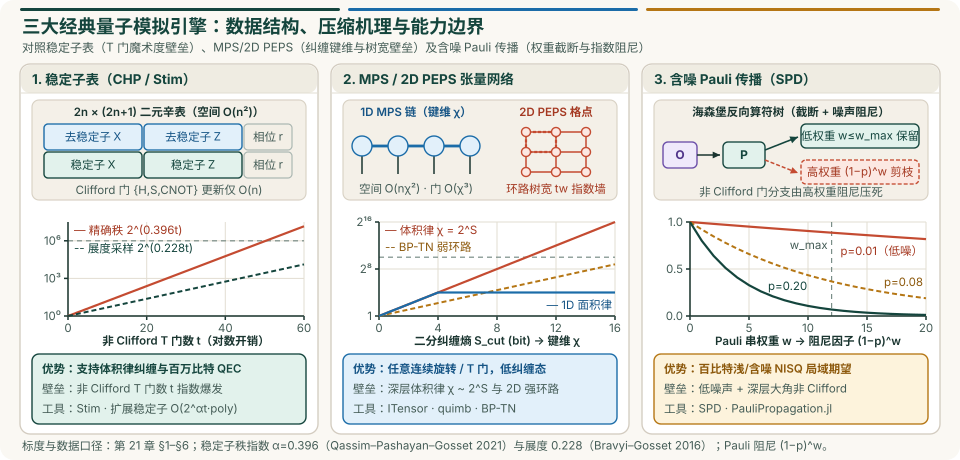
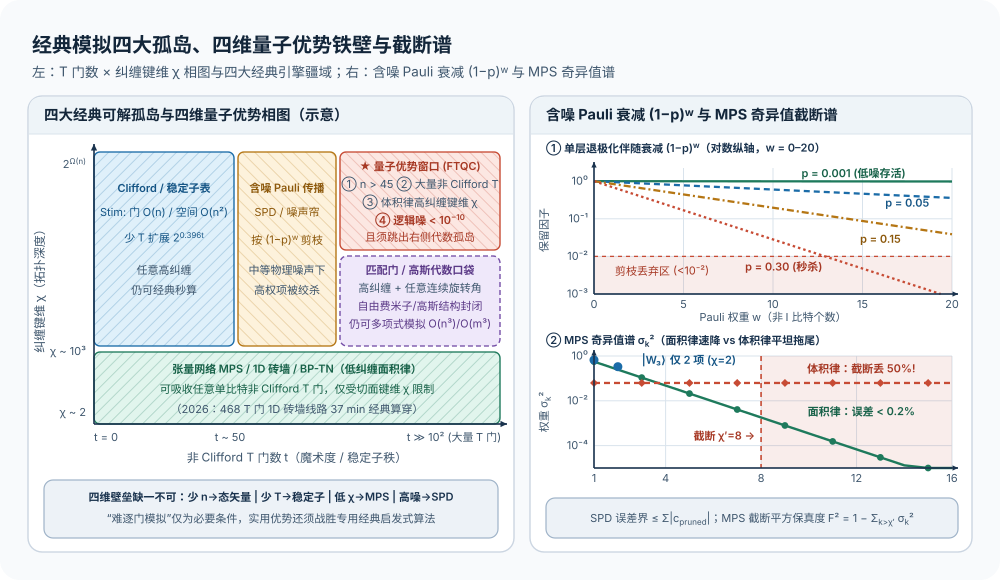

21｜稳定子形式、经典模拟引擎与量子优势边界
几乎每一位刚学完多比特张量积的读者，脑海里都会先算一笔醒目的存储账： 个量子比特的纯态有 个复振幅，按每个双精度复数占 字节计算，单把这一个量子态存进内存就需要约 ——远远超过普通工作站，甚至逼近大型超级计算机的整机内存。于是，一个看似顺理成章的误判便常出现在科普与新闻里：“只要芯片做到 或 个量子比特，经典计算机连态都存不下，量子计算就必然已经超越经典。”
本章用严谨的数学推导与可运行代码厘清这一误判，并把评判“量子优势边界”的核心经典模拟工具箱系统交到你手上。
学完本章后，你将自己算通、并仅用 Python 3 标准库跑通三类现代经典模拟迷你引擎——Aaronson–Gottesman 稳定子表、矩阵乘积态（MPS）与海森堡绘景 Pauli 传播——亲手验证它们各自如何将表面上 维的演化压缩到多项式或可控开销内。把这几类经典模拟引擎的适用域拼合在一起，你也能从第一性原理看清真正避开全部经典模拟器的四维量子优势边界，并理解为什么量子纠错与容错架构是通向可扩展实用量子优势的必要门槛。
分层阅读建议：必读 ★ 建议通读第 1–3.3 节（辛代数与稳定子表）、第 4.1 与 4.3–4.5 节（四大经典可解孤岛）、第 5.1–5.3 节（MPS 逐键 SVD 与截断）、第 6.1–6.2 节（Pauli 传播与噪声衰减）及第 7 节（四维边界与开源工具选型）；标有 进阶选读 ☆ 的第 3.4 节、第 4.2 节、第 5.4–5.5 节与第 6.3–6.4 节包含代码实现、稳定子秩推导、2D PEPS/BP-TN 与算符范数界证明，适合动手复现或研读前沿论文时精读。
阅读本章前，建议先熟悉以下五个前序模块（遇到具体公式时随时回翻）：
- 第 03 章：多量子比特与纠缠（Schmidt 分解、二分纠缠熵、GHZ 态与 W 态）；
- 第 04 章：量子电路与协议（Clifford 群 、 门与 Gottesman–Knill 定理直觉）；
- 第 05 章：混态、噪声与量子信道（单比特退极化信道 与随机 Pauli 参数换算 ）；
- 第 10 章：量子纠错与容错计算（稳定子群 与生成元概念）；
- 第 15 章：实践路线（大端序态矢量模拟器与端序检查）。
本章局部符号对照（按需展开，已与附录符号表对齐）
| 符号 / 约定 | 本章含义、维数与单位口径 | 跨章与代码对齐说明 |
|---|---|---|
| 多比特基序与内积 | 高位在左大端序 ；左共轭内积 | 与符号表及配套脚本 simulation_engines_lab.py 完全一致 |
| 线路与算符次序 | 电路图从左向右执行；态演化 与信道复合 从右向左作用 | 海森堡反向传播 按门序逆序展开 |
| 比特 Pauli 串的 比特二元辛行向量 与相位位 | 单比特编码 | |
| 与 | 本章沿用全书主记号，用 专指稳定子秩（无量纲正整数，部分文献亦简记 ），用 专指 MPS 键维（bond dimension） | 与符号表一致；注意区分第 13 章的 Holevo 量 ，每节就地标明对象 |
| 比特 Pauli 串 的权重（非恒等单比特因子 的个数，无量纲整数 ） | 与符号表一致；退极化伴随映射下按 衰减 | |
| 稳定子展度（stabilizer extent），无量纲实数 | 决定扩展稳定子近似采样开销的主导指数基底 | |
| 与 | 退极化信道 （）及其迹内积伴随映射 | 是海森堡伴随而非逆信道；与 Stim 随机 Pauli 参数 满足 |
| 与 | 根保真度 ；平方重叠明写 | MPS 截断误差 对应 |
| 与 | 纠缠熵、比特数与指数标度基底一律写 ；自然对数一律写 | 全章不使用不标底数的裸对数 |
1. 为什么“存不下 个振幅”不等于“经典算不动”？
1.1 态矢量内存墙：为什么 只挡住了最老实的一种表象
在第 15 章中，我们亲手写过最直接的经典模拟器——态矢量（statevector）模拟器：把 比特纯态存成一个长度为 的复数数组，每执行一个量子门就按张量切片扫一遍数组，耗时与内存都严格按 增长；若要模拟含噪混态密度矩阵 ，则需要存 个复数。
- 一台内存 的工作站，存纯态大约止步于 比特（），存密度矩阵更是掉到 比特；
- 动用数千节点内存池的顶级超级计算机，纯态极限也大致停在 比特。
但请你停下来想一个物理与计算机科学里反复上演的常识：把一张 像素的纯白画面存成未压缩位图需要几兆字节，可如果你只写一句“宽 1000、高 1000、全白”，只需要二十个字节。 量子态的 个振幅同样常常充满高度对称或局域约束：
- 代数对称约束：如果电路只使用 Clifford 门，那么哪怕 个比特已经纠缠成一片，这 个复振幅依然由区区 条局域 Pauli 方程唯一锁死——你完全不必展开振幅，只需用 比特的表格追踪这 条方程的演化。
- 空间纠缠结构约束：如果比特排成一维链且跨切面的量子纠缠熵有界（满足面积律）， 维张量就能无损或近无损地因式分解成 个小矩阵连乘（矩阵乘积态 MPS），存储量从 骤降至 。
- 海森堡可观测量与噪声稀疏约束：如果实验最终只关心某几个局域可观测量 或 ，而且电路较浅、旋转角不大或存在真实物理噪声，那么我们根本不必正向推演整个量子态 ，只需把简单的末态算符 沿电路倒推回初态——沿途高权重分支会被物理噪声指数级杀灭，留下极稀疏的 Pauli 展开。
因此，“态矢量模拟器内存爆炸”只说明最朴素的稠密数组表示失效了，绝不等于“经典计算机算不动这条电路”。
1.2 先分清三类模拟任务：强模拟、弱模拟与期望值估计
评判经典模拟器快慢之前，必须先锁清“到底要算什么输出”——这和第 16 章第 1 节里强调的输出形式完全呼应：
- 强模拟（strong simulation）：给定任意一个指定比特串 ，精确（或按指定乘法/加法精度）算出输出概率 或复振幅 （以及任意边缘概率）。强模拟最苛刻；例如计算一般张量网络收缩振幅就常落入强模拟范畴。
- 弱模拟（weak simulation / sampling）：不需要打印特定 的概率数值，只需在经典计算机上按与真实量子硬件相同（或总变差距离 ）的概率分布 随机抽样输出比特串 。真实量子芯片本身只做弱模拟（每次运行吐出一个测量样本）；许多现代经典算法（如 Bravyi–Gosset 扩展稳定子采样、Stim 批量采样）在弱模拟上比强模拟快出一个指数因子。
- 局域可观测量期望值估计（expectation estimation）：不要求采样全部 比特联合位串，只要求在给定加性误差 内算出 （例如 Ising 磁化强度、变分能量 ）。现代置信传播张量网络（BP-TN）与海森堡稀疏 Pauli 动力学（SPD）正是专为这一类任务打造的利器——它们经常能在几分钟内算穿百比特实验的局域均值，即便同一电路的精确全分布采样依然很困难。
1.3 四大经典模拟引擎复杂度与适用域全景表
把当今量子计算研究中最核心的四类经典模拟引擎并排铺开，各自的数学对象、复杂度标尺、适用规模与真正怕什么结构一目了然（本表是对第 16 章综述入口的完整算法级展开）：
| 经典模拟引擎 | 追踪的数学对象 | 时间 / 空间主标度 | 擅长攻破的电路结构 | 真正会撞墙失效的场景 | 代表工具与奠基文献 |
|---|---|---|---|---|---|
| 1. 态矢量 / 密度矩阵 | 复振幅向量或 密度矩阵 | 空间 （纯态）/ （混态）；单门 | 小比特数（）任意深度、任意门集、任意纠缠与噪声的黄金精确对照 | 比特数超过 （哪怕线路只有 1 层浅门） | 自编张量引擎（15 §2）、Qiskit Aer、QuTiP、PennyLane |
| 2. 稳定子 / 扩展稳定子 | 二元辛表（或 个稳定子态叠加） | 纯 Clifford：空间 ，门 ，确定性测 （逆表 ）； 个 门： | 数千至数百万比特的 QEC 电路；或高比特数但非 Clifford 门较少（）的近 Clifford 线路 | 既含海量非 Clifford 门（）又无法被低纠缠张量网络吸收的通用线路 | CHP（Aaronson–Gottesman PRA 2004）、Stim（Gidney Quantum 2021）、Bravyi–Gosset（PRL 2016）、Qassim–Pashayan–Gosset（Quantum 2021） |
| 3. 张量网络（MPS / PEPS / BP-TN） | 局域低秩张量网（一维链键维 、二维格点或时空张量网） | 1D MPS：空间 ，双比特门 ；精确收缩随树宽（treewidth）指数增长 | 一维低纠缠/面积律态、浅层二维线路、弱环路格点（如重六角格）、或一维开放边界砖墙（单比特 门可直接吸收！） | 深层二维或全连接拓扑上的体积律纠缠（键维 随切面面积指数爆发）且强长程环路破坏树近似 | ITensor、quimb、Schollwöck（Ann. Phys. 2011）、BP-TN（Tindall 等 PRX Quantum 2024; Science 2026）、Manabe–Gu–Pan（arXiv:2608.13110，2026） |
| 4. 海森堡 Pauli 传播 / SPD | 反向演化后的稀疏 Pauli 串字典 | 与保留的稀疏 Pauli 项数 线性成正比；含噪时高权重串按 指数衰减 | 百比特级浅层线路、小角度 Trotter 步、变分线路及含中等物理噪声的 NISQ 动力学局域期望值 | 低噪声（容错级）+ 深层 + 大角度非 Clifford 门引发的算符混沌增殖（高权重分支不被噪声压死） | SPD（Begušić–Gray–Chan Sci. Adv. 2024）、PauliPropagation.jl（Rudolph 等 PRX Quantum 2026）、Aharonov 等（STOC 2023） |
接下来五节，我们就逐一打开第 2、3、4 号引擎的黑箱，把每一步代数、每一个相位负号和每一条误差界都拿纸笔算透，并用纯 Python 标准库代码与第 1 号精确参考引擎逐格对账。
2. Pauli 群的辛二进制代数与 Aaronson–Gottesman 稳定子表
2.1 问题与直觉：用 条方程替代 个振幅
回到第 10 章第 4 节：如果一个 比特纯态 满足 ，我们就说算符 稳定了 。
拿最简单的 比特初态 来看。在态矢量里，你要写一个长达 的列向量 ；但在稳定子语言里，它只需要 条极其朴素的方程就能唯一钉死（除去无关的全局相位）：
为什么 条独立的、两两对易且不含 的 Pauli 生成元 就能唯一锁死一个 维空间里的纯态？理由很像解线性方程组：每加一条新的独立约束 ，就把允许解空间的维度严格砍半；从 维连砍 刀，剩下的共同 本征空间维度恰好是 ——也就是一条唯一的一维射线（一个唯一纯态）！
更妙的是，当我们对 施加一个酉门 时，新态 被什么算符稳定？插一个 立刻见底：
也就是说，状态演变为 ，等价于每一条稳定子生成元演变为 ！ 只要 来自 Clifford 群 ，共轭结果 永远还是单个带 符号的 Pauli 串——生成元条数永远保持 条，绝不膨胀。
那么计算机怎么把这些 Pauli 串存成极快的比特阵列，又怎么在 时间内完成门更新？这就是 Aaronson 与 Gottesman（Phys. Rev. A 70, 052328, 2004） 确立的二元辛编码与稳定子表（stabilizer tableau）。
2.2 把 比特 Pauli 串编码成 与相位位
对单个比特，4 个厄米 Pauli 矩阵 恰好可以用 2 个二元比特 编码。记住全书的乘积关系 （即 、），我们把 映射为厄米单比特算符 ：
| 比特对 | 对应厄米 Pauli | 用 表达 | 记忆口诀 |
|---|---|---|---|
| 无 无 | |||
| 仅有 | |||
| 仅有 | |||
| 既有 又有 （乘 保厄米） |
推广到 个比特（大端序 ）：任何带实符号 的 比特厄米 Pauli 串（所有稳定子生成元都必为厄米且平方为 ，因此总体相位只能是 或 ，绝不能是 ），都可以唯一编码为长度为 比特的一整行：
其中 ， 表示整体正号 ， 表示整体负号 。
举两个 的小例子热热身：
- ：两位都是 ，正号 ，写成行向量 ；
- ： 为 ， 为 ，负号 ，写成行向量 。
2.3 逐步手算：用二元辛内积判定对易与反对易
稳定子算法里最频繁的操作就是判断两条 Pauli 串 究竟是对易（）还是反对易（）。难道要把它们展开成 矩阵去相乘吗？当然不用！
先看单比特 上两个非平凡 Pauli 算符 与 。因为 、任何算符与自身或 都对易，交换两者次序时出现负号 的次数恰好取决于“一个取 分量、另一个取 分量”的交叉配对数：
逐对核验全部不平凡组合： 与 得 （反对易）； 与 得 （反对易）； 与 得 （对易）——条条精准！
把全部 个比特的负号乘起来，总负号次数就是每位交叉项的模 之和，这就定义了 上的二元辛内积（binary symplectic inner product）：
其中 、。于是得到黄金判据：
辛内积等于 即对易，等于 即反对易，与相位位 完全无关！只需 次按位与和异或即可完成判定。
逐步手算两组 算例
检验 与 ： 编码为 、。逐位代入辛内积：
结果为 ，二者对易！直接算符回验：，两个负号相消，严丝合缝。
检验 与 ： 编码为 、。逐位代入：
同样对易！再换 （）与 ：
结果为 ，二者反对易（因为第 位 ，第 位 ）。
2.4 行乘积 rowsum：把两条对易 Pauli 串准确相乘并算准正负号
在稳定子表模拟测量时，我们经常需要把第 行算符 左乘到第 行算符 上，用乘积 替换第 行（Aaronson–Gottesman 称为 rowsum(h, i)）。
对每一列 ，新的 比特非常简单，直接按位异或即可：
真正的精细处在于相位位 ！ 即使两条 Pauli 串本身只带 ，它们在某一位上做单比特乘法时却可能吐出 （比如 ）；只有把全部 个比特吐出的 的幂次加在一起，才能知道最终是 还是 。
为此，定义单比特乘积 中的指数函数 ：
挑两项手算验证： 对应 ，代入第三行得 ，对应 ，精确！ 对应 ，代入第二行得 ，对应 ，精确！
把 与 原有的符号 、 与全部 位的 指数加在一起，得到总指数和：
只要 与 对易，它们的乘积 必然仍是厄米算符，因此 只能取 （正号，）或 （负号，），绝不会取 或 ！我们在代码里会对这一条做严格断言，用来即时捕获任何把反对易行误乘在一起的程序漏洞。
2.5 逐条推导 的 比特更新规则与相位修正项
现在来推导全部三个 Clifford 群生成元作用在表内每一行 上的比特更新法则。记原算符为 ，经 Clifford 门 作用后变为 。因为单比特或双比特门只影响对应的一列或两列，更新整张表（ 行）总共只需要 次比特运算！
1. Hadamard 门 作用在第 个比特
逐一写出全部 4 个单比特 Pauli 算符的共轭结果（参见第 04 章第 10.1 节）：
- ：，符号不变；
- ：，符号不变；
- ：，符号不变；
- ：，符号翻转！
对比四行，规律一眼看穿： 与 互换，且当且仅当 （即该位为 ）时相位位 翻转。写成二元公式：
2. 相位门 作用在第 个比特
同样逐项核验全部 4 个单比特共轭（利用 ）：
- ：，符号不变；
- （对角阵对易）：，符号不变；
- ：，符号不变；
- ：，符号翻转！
注意 变为 ，且相位翻转同样只发生在 处——须先用旧值更新 ，再改写 ：
3. 受控非门 （控制位 ，目标位 ）
先把 4 个单比特基础算符拿 共轭，这四条是所有双比特推理的地基：
它们对应的 比特更新非常干净：控制位的 向目标位传播，目标位的 向控制位回传：
最容易漏掉的细节是相位修正项！ 为什么上面四条都没有负号，组合出 之后却会冒出负号？把全部含 且 的 4 种组合一步步展开，答案立现：
（）：
（）：
（）：
（）：
另外 12 种（ 或 ）组合中， 位与 位不会同时跨位产生两个 因子，经逐一验证全部保持 号。于是全部 16 种情况中有且仅有 与 两项变号——它们的共同特征是 且 （即 ）！于是得出 的完整更新规则（同样必须先用旧比特算完 ，再改 与 ）：
3. 稳定子表的逐步手算、去稳定子加速与纯 Python 引擎
如果只存 条稳定子生成元，做 Clifford 门虽然是 ，可一旦遇到确定性测量（判断 究竟哪一个符号落在稳定子群 里），就得在 上对 矩阵做高斯消元，单次测量复杂度立刻飙回 。
Aaronson 与 Gottesman（2004）想出了一个极具巧思的“空间换时间”方案：把表格高度翻倍到 行——下半区 行存放稳定子 ，上半区 行同步存放配套的去稳定子（destabilizer），并始终维持三组辛不变量：
白话来说，每一条去稳定子 都是第 条稳定子 的“专属对偶探针”：它只与 反对易，与其余 条稳定子全部对易。对初态 ，这套配对天然成立：、。由于任意酉共轭都严格保持对易/反对易关系，只要每次施门时对全部 行做同样的 更新，这三组不变量就会自动永远保持！
3.1 逐步手算：从 演化到 Bell 态
取 ，完整写出 稳定子表（列顺序依次为 ，行 为去稳定子 ，行 为稳定子 ）。
第 0 步：初态
| 行号与角色 | 对应 Pauli 串 | |||||
|---|---|---|---|---|---|---|
| 行 0（） | ||||||
| 行 1（） | ||||||
| 行 2（） | ||||||
| 行 3（） |
第 1 步：施加 （对全部 4 行的第 列执行 ，再互换 ）
四行的 依次是 ，乘积 全为 ，所以 全不变；互换第 列的 与 后得到 的表：
| 行号与角色 | 对应 Pauli 串 | |||||
|---|---|---|---|---|---|---|
| 行 0（） | ||||||
| 行 1（） | ||||||
| 行 2（） | ||||||
| 行 3（） |
第 2 步：施加 （对全部 4 行执行先算 ，再算 、）
逐行核算：
- 行 0（）：，更新后仍为 ；
- 行 1（）：，更新后仍为 ；
- 行 2（）：，，，得 ；
- 行 3（）：，，，得 。
得到 Bell 态 的完整稳定子表：
| 行号与角色 | 对应 Pauli 串 | |||||
|---|---|---|---|---|---|---|
| 行 0（） | ||||||
| 行 1（） | ||||||
| 行 2（） | ||||||
| 行 3（） |
立刻检验辛不变量：、、、——全部严丝合缝！
3.2 测量 的坍缩更新、行约化与紧接着测 的确定性读出
现在对 在计算基测量第 个比特（即测量算符 ）。怎么只看表格就判定这次测量是随机还是确定？
检查稳定子区（行 到 ）中，有没有哪一行与 反对易——因为 只有 ，辛内积 ！所以只需要扫描第 列的 位！
步骤 A：在 上测量 （随机分支） 扫描稳定子行 2（）和行 3（）的 ：
- 行 2（）满足 ！记首个命中的行号为 。
- 这说明 与稳定子 反对易，因此测量结果 严格以各 的概率随机出现！
- 行约化（消去其余行对 的反对易）：对所有满足 、 且 的行，执行
rowsum(i, p)（乘上旧的 ）。为什么要跳过 ？因为 是整张表里唯一与 反对易的行（相乘会变成反厄米算符），而且下一步它马上就要被旧 直接覆写！本例中行 0、1、3 的 均为 ，无需额外rowsum。 - 坍缩覆写：把旧稳定子行 复制到对应去稳定子行 （即 ），再把行 覆写为观测到的新稳定子 ！
取随机结果 （测得比特 为
1），得到坍缩后的新表：行号与角色 对应 Pauli 串 行 0（） 行 1（） 行 2（） 行 3（） 核对一下：新稳定子群 的唯一共同 本征态正是 （因为 且 ）；同时全部 行的辛不变量依然 100% 成立（例如 、）。
步骤 B：紧接着测量 （确定性分支——亲眼见证去稳定子的威力！） 扫描新稳定子行 2（）与行 3（）的 列：
，——没有任何一条稳定子与 反对易！
这说明 （带某个唯一符号 ）一定可以写成当前稳定子生成元的乘积：
怎么不解方程组、直接读出 ？ 把上式两边分别与去稳定子 做辛内积！因为 只与 反对易而与其余稳定子全部对易，右边立刻吐出 ，左边则恰好是 ！因此一步直读：
立刻查上表的去稳定子行 0 和行 1 的 列：
- ；
- ！
准备一条全零暂存行（），依次调用
rowsum(scratch, 2)乘入 ，再调用rowsum(scratch, 3)乘入 ：- 乘 ：得 ，即 ；
- 再乘 ：（），（），总相位 ，得 ！
读出暂存行相位位 ，因此确定性测量结果必为 ——与 Bell 态在测得 后 必为 的物理事实分毫不差！若刚才随机分支取 ，则 ，乘积给出 ，，确定性测得 。
3.3 从 到 再到 Stim 的千赫兹级采样
总结一下稳定子模拟在算法与工程上的三次代际跃升：
- 原始 Gottesman–Knill（1998）：仅维护 条稳定子，确定性测量需在 上做高斯消元，单次耗时 。
- Aaronson–Gottesman CHP（Phys. Rev. A 70, 052328, 2004）：引入 条去稳定子， 直接给出组合系数，只需最多 次
rowsum，将单次确定性测量压至 ；论文同时证明纯稳定子电路模拟是经典复杂度类 （ParityL）完全问题，暗示它连通用经典逻辑（如 Toffoli 门）都无法单靠自身实现。 - Stim（Gidney, Quantum 5, 497, 2021）：现代容错纠错仿真的工业引擎，靠三把手术刀把速度又推高了数个数量级：
- 追踪逆稳定子表（inverse tableau）：利用逆表把确定性测量的渐近复杂度进一步压到 ；
- 256 位宽 SIMD 缓存友好布局：一次 CPU 指令同时异或 256 个比特；
- 参考样本 + 批量 Pauli 帧传播（reference sample & Pauli frame simulation）：在纠错仿真里，我们往往要对同一条含随机 Pauli 噪声的电路采样数百万次（shots）。Stim 只运行一次昂贵的无噪稳定子表得到一条“无错参考测量串”；随后数百万次含噪抽样中，完全不再跑稳定子表，只把每个随机注入的 Pauli 错误（一个极轻量的 2 比特/量子比特 Pauli 帧）沿 Clifford 门按位异或推向测量端口——任何与测量算符反对易的错误帧都会把对应参考测量比特取反！正因如此，Stim 模拟码距 、含 比特、 万个门与 万次测量的表面码电路，仅需约 秒完成建表分析，此后便能以千赫兹级速率批量吐出完整含噪样本。
3.4 进阶选读：约 50 行纯 Python 稳定子表核心代码
下面是从配套脚本 simulation_engines_lab.py 中提炼出的无第三方依赖核心骨架（仅使用 Python 3 标准库，去掉注释约 50 行），读者可以直接复制运行并与第 15 章的态矢量模拟器交叉核验：
import random
def _phase_g(x1, z1, x2, z2):
if x1 == 0 and z1 == 0: return 0
if x1 == 1 and z1 == 1: return z2 - x2
if x1 == 1 and z1 == 0: return z2 * (2 * x2 - 1)
return x2 * (1 - 2 * z2)
class StabilizerTableau:
def __init__(self, n):
self.n = n
self.x = [[0] * n for _ in range(2 * n + 1)]
self.z = [[0] * n for _ in range(2 * n + 1)]
self.r = [0] * (2 * n + 1)
for j in range(n):
self.x[j][j] = 1 # 去稳定子 D_j = +X_j
self.z[n + j][j] = 1 # 稳定子 S_j = +Z_j
def _rowsum(self, h, i):
s = 2 * self.r[h] + 2 * self.r[i]
for j in range(self.n):
s += _phase_g(self.x[i][j], self.z[i][j], self.x[h][j], self.z[h][j])
self.x[h][j] ^= self.x[i][j]
self.z[h][j] ^= self.z[i][j]
assert s % 4 in (0, 2)
self.r[h] = 0 if s % 4 == 0 else 1
def h(self, a):
for i in range(2 * self.n):
self.r[i] ^= self.x[i][a] & self.z[i][a]
self.x[i][a], self.z[i][a] = self.z[i][a], self.x[i][a]
def s(self, a):
for i in range(2 * self.n):
self.r[i] ^= self.x[i][a] & self.z[i][a]
self.z[i][a] ^= self.x[i][a]
def cnot(self, ctrl, tgt):
for i in range(2 * self.n):
xc, zc = self.x[i][ctrl], self.z[i][ctrl]
xt, zt = self.x[i][tgt], self.z[i][tgt]
self.r[i] ^= xc & zt & (xt ^ zc ^ 1)
self.x[i][tgt] = xt ^ xc
self.z[i][ctrl] = zc ^ zt
def measure_z(self, a, forced_outcome=None, rng=None):
n = self.n
p = next((row for row in range(n, 2 * n) if self.x[row][a] == 1), -1)
if p != -1: # 随机分支：行约化后用旧 S_p 覆写 D_{p-n}，S_p 置为 (-1)^m Z_a
for i in range(2 * n):
if i != p and i != p - n and self.x[i][a] == 1:
self._rowsum(i, p)
self.x[p - n], self.z[p - n], self.r[p - n] = self.x[p][:], self.z[p][:], self.r[p]
self.x[p], self.z[p] = [0] * n, [0] * n
self.z[p][a] = 1
sampler = rng if rng is not None else random
outcome = sampler.randrange(2) if forced_outcome is None else int(forced_outcome)
self.r[p] = outcome
return self.r[p], True
# 确定性分支：利用去稳定子 O(n^2) 读出 c_k = x[k][a]
sc = 2 * n
self.x[sc], self.z[sc], self.r[sc] = [0] * n, [0] * n, 0
for k in range(n):
if self.x[k][a] == 1:
self._rowsum(sc, k + n)
return self.r[sc], False
在配套脚本中，我们对 4 比特随机 Clifford 电路（含 28 个随机 门与中段投影测量，固定种子 20261125）全量核验了全部 个 Pauli 串期望值，稳定子表引擎与独立大端序态矢量引擎之间的最大偏差小于 。
练 21-A（就地练习：3 比特线性集群态稳定子表与 MBQC 确定性读出）
从 3 比特初态 出发，先对全部三比特施加 制得 ，再依次施加 与 （提示： 满足共轭关系 ，且保持 不变），制备第 17 章 §3.1测量型量子计算（MBQC）的最小资源态——3 比特线性集群态 。
- 写出演化后的全部 3 条去稳定子 与 3 条稳定子 ，并与第 17 章图态稳定子公式 对照；
- 设先测 得随机结果 ，再对第 1 比特施加 后测 （等价于在 基测量）得随机结果 。写出两步更新后的稳定子表，并用去稳定子法逐步推导：紧接着测量 必得确定性结果 （物理上对应第 17 章 §3.1 的 MBQC 传送 ）。
逐步解答：
- 初态 ；。
- 施 ：；；
- 施 ： 仅含 与 保持不变；，， 不变；
- 施 ： 仍不变； 不变，，。 最终 6 行为：；，恰好与线性图 的三条图态稳定子 完全一致。
- 第一步（测 ，取 ）：稳定子区仅 满足 （，随机分支），且其余行 全为 ，无需
rowsum。覆写得：；。
第二步（施 后测 ，取 ）：施加 后（互换第 1 列 ，因各行第 1 位均非 故相位全不变）：；。测 时，稳定子区仅 满足 （，随机分支）；去稳定子行 0、1 的 也为 ，执行行约化
rowsum(0, 5)得 ，执行rowsum(1, 5)得 。覆写 、（），得：；。第三步（测 ，确定性分支）：稳定子区 全为 ，触发确定性读出！直读去稳定子区第 2 列 位：（）、（）、（）。三条稳定子相乘：
相位位 ，因此确定性测得 （即 处于 ，与 MBQC 单步传送公式精准吻合）。
4. 打破 Clifford 壁垒：魔术度、稳定子秩与四大经典可解孤岛
上一节展示了一个出乎直觉的事实：即便 个比特深度纠缠在一起，只要线路落在 Clifford 群里，一台笔记本电脑照样秒算。那么，究竟是什么把量子计算推出稳定子世界？如果线路里掺进了少量非 Clifford 门（例如 个 门），稳定子模拟器会立刻瘫痪，还是能继续撑住？除了 Clifford 群之外，量子力学里还有哪些同样“纠缠满满却经典可解”的隐蔽孤岛？
这一节把这些问题一次讲透。
4.1 并非每个 门都产生魔术度：对比 与
在第 04 章第 10.3 节中，我们知道把离散的 相位门 加入 就能获得通用量子计算能力。物理学界把量子态偏离稳定子集合（严格说，偏离所有稳定子态凸包）的非稳定子资源形象地称作魔术度（magic / non-stabilizerness）（对应的非稳定子资源态，与全书第 10、11 章统一称作魔法态）。
不过，不应误以为“电路里每写一个 门，经典模拟难度就必定翻倍”。先算两道最朴素的单比特对比：
把 门作用在 上：
本身就是稳定子态（稳定子 ）！因为 是 的本征态，而 与 对易，这个 门根本没有造出任何魔术度——只需要 个稳定子态就能精确描述它。
把 门作用在 上：得到标准魔法态（magic state） ：
算一下它在 Bloch 球上的三维坐标 ：
全部 6 个单比特稳定子态（）严丝合缝地钉在 Bloch 球的 6 个坐标轴极点 上；而 恰好落在赤道 中点 ，离全部 6 个稳定子极点都最远！没有任何一条单比特 Pauli 算符能稳定它，单张稳定子表无法表示它。
4.2 进阶选读：稳定子秩与稳定子展度手算——为何标度远低于
单张稳定子表装不下 ，那就用多张稳定子表的线性叠加来装！对任意 比特纯态 ，把它写成若干归一化稳定子态 的线性组合所需的最少项数，称为它的精确稳定子秩（exact stabilizer rank），全书统一记作 （部分文献亦简记 ）：
由第 10 章与第 04 章的“门隐形传态（state injection）”技巧可知：电路里每出现 1 个 门，都能等价替换成提前消耗 1 份魔法态 再加 Clifford 门与 Pauli 测量。因此，含 个 门的电路经典模拟难度，直接归结为分解 份魔法态张量积 的稳定子秩！
下面我们一步不跳地手算 与 ，亲眼看看如何打破朴素的 魔咒：
第一步： 的两种 2 项分解与“稳定子展度”
最直接的正交基分解（计算基）：
这里 （稳定子 ）和 （稳定子 ）都是稳定子态，于是立得 。此时系数的 范数平方为 。
更紧凑的非正交赤道分解（达到最小 展度）： 既然 在赤道上正夹在 与 正中间，试试用这两支非正交稳定子态合成它！取系数
逐分量展开验证 ：
分量：；
分量（注意 ，故 ）：
两格完全一致！现在算这组分解的 范数平方——在资源论里，所有合法稳定子分解中 的最小值叫作稳定子展度（stabilizer extent） ：
把 改写成以 为底的幂：！之所以它远小于正交分解的 ，是因为非正交的 与 在 方向上发生了相长干涉。
第二步： 的惊喜——两份魔法态只需要 2 项而不是 4 项！
如果机械地把单份分解做张量积， 会炸成 项。可如果允许使用纠缠稳定子态呢？把 按计算基展开（注意 ），然后按奇偶分组：
括号里的 （我们在第 03 章第 6.2 节亲手算过！）和 Bell 态 全都是纯粹的 2 比特稳定子态！也就是说：
仅凭这一行手算，我们就立刻把 个 门的精确稳定子分解从 拦腰砍成了 ！
第三步：从 Bravyi–Gosset（2016）到 标度
顺着“把多份 打包进高维纠缠稳定子态”的思路继续挖深：
- Bravyi 与 Gosset（Phys. Rev. Lett. 116, 250501, 2016） 奠定了扩展稳定子模拟（extended stabilizer simulation）的现代算法框架：一方面构造出 6 份魔法态的精确分解 ，将精确稳定子秩推进到 （配合快速范数估计算法，在普通硬件上成功模拟了 40 比特、近 50 个 门的隐藏移位线路）；另一方面引入随机稀疏化，使近似弱采样复杂度直接受稳定子展度 支配，达到 （ 为测量比特数）。
- Qassim、Pashayan 与 Gosset（Quantum 5, 606, 2021） 进一步利用递归猫态构造，将精确稳定子秩的渐近指数压低至 ，也就是文献中常引用的 标度！
算一笔直观的对比账：当 比特、线路含 个 门时，态矢量需要 个复数（完全不可能）；而扩展稳定子方法只看 不看 ，（近似采样 ），在普通工作站上轻松拿下！反过来，一旦容错算法需要上千乃至数百万个 门，扩展稳定子就会撞上指数硬墙。
4.3 另一座经典可解孤岛：匹配门（Matchgates）与自由费米子
初学者学完 Gottesman–Knill 定理后，常会误以为“Clifford 门是唯一能制造纠缠却经典可解的门族”。2002 年，计算机科学家 Leslie Valiant（SIAM J. Comput. 31, 1229, 2002） 用图论里的 Pfaffian 完美匹配理论发现了第二座完全独立的经典可解孤岛——匹配门（matchgates）；同年，Barbara Terhal 与 David DiVincenzo（Phys. Rev. A 65, 032325, 2002） 以及 Knill 独立揭示了它令人惊叹的物理真面目：一维最近邻匹配门电路在物理上严格等价于无相互作用的自由费米子（non-interacting fermions）演化！
把它的矩阵定义写出来非常清晰。作用在相邻两比特 上的 4 维双比特酉门 若呈“偶宇称子空间 与奇宇称子空间 分块”且两块行列式相等，即称为匹配门：
为什么一排仅作用在最近邻比特上的匹配门能被经典多项式时间精确模拟？通过第 08 章学过的 Jordan–Wigner 变换，把 个量子比特映射为 个满足反对易关系 的 Majorana 费米子算符：
每一扇最近邻匹配门 都对应一个仅含 Majorana 算符二次项的自由费米子哈密顿量 。在海森堡绘景中，二次哈密顿量生成的酉演化把 个 Majorana 算符彼此做线性实正交旋转：
看见与稳定子表高度相似的结构了吗？你根本不需要跟踪 维希尔伯特空间，只需维护一张 的实正交矩阵 （或二阶协方差矩阵），所有门乘法和局域计算基测量概率都化为 矩阵乘法与 Pfaffian/行列式计算，全程多项式时间 ！而且匹配门可以包含任意连续旋转角（例如 与 ），完全不需要落在 Clifford 群里。
更锋利的是它的破壁边界（Jozsa & Miyake, Proc. R. Soc. A 2008）：只需打破“最近邻”拓扑限制——或者等价地，往匹配门集合里多塞进一扇普通的 门——经典高效模拟瞬间崩塌，电路立刻跃升为通用量子计算！验证一下为什么 不是匹配门：
就差这一个 的负号！在费米子物理里，跨位交换会引入四次费米子相互作用（打破自由费米子封闭性），正好把体系从多项式可解孤岛推入通用量子多体世界。
4.4 连续变量高斯孤岛（衔接第 18 章第 9 节）
把视角从离散量子比特跨到无限维光学/超导谐振腔系统，我们在第 18 章第 9 节已经见过第三座平行孤岛——连续变量高斯电路。
在 模无量纲正交算符 （满足 ）下，Bartlett、Sanders、Braunstein 与 Nemoto（Phys. Rev. Lett. 88, 097904, 2002） 证明：由高斯初态（真空态、相干态、压缩态）、高斯门（相移、分束器、单/双模压缩，对应 实辛变换 ）与零差/外差测量构成的电路，只需以 代价追踪 维均值向量 与 协方差矩阵 （），经典计算机完全可高效模拟！随后 Mari 与 Eisert（Phys. Rev. Lett. 109, 230503, 2012） 将此边界进一步推广：只要电路的初态、门和测量的 Wigner 函数处处非负，仍可用经典蒙特卡洛高效采样。
打破高斯孤岛的必要资源，正是非高斯性与 Wigner 负性（如单光子 Fock 态、立方相位门或 GKP 码态）——它在连续变量世界里扮演的正是 门魔术度在离散比特世界里的角色。
4.5 四大经典可解孤岛全景图谱
把 Clifford、匹配门、高斯连续变量与下一节即将展开的低纠缠/含噪线路并排收进同一张图谱，你就能清晰看见：量子优势绝不只是“有没有纠缠”的一维问题，而是必须同时逃离所有已知经典可解孤岛！
| 经典可解孤岛 | 经典压缩表示与规模 | 允许存在大量纠缠？ | 典型破壁资源（离开孤岛所需） | 代表定理与参考文献 |
|---|---|---|---|---|
| 1. Clifford / 稳定子线路 | 二元辛表，空间 | 是（可达体积律最大纠缠） | 魔术度（大量非 Clifford 门，如 门 / Toffoli 门） | Gottesman–Knill (1998)；Aaronson–Gottesman (2004)；Gidney (2021) |
| 2. 最近邻匹配门 / 自由费米子 | 正交矩阵 ，空间 | 是（可含任意连续角非 Clifford 纠缠） | 打破最近邻 / 加入 或四次费米子相互作用 | Valiant (2002)；Terhal–DiVincenzo (2002)；Jozsa–Miyake (2008) |
| 3. 高斯连续变量 / 正 Wigner 线路 | 维均值 + 协方差矩阵，空间 | 是（双模压缩态纠缠可任意大） | Wigner 负性 / 非高斯门与态（Fock 态、GKP 态、立方相位门） | Bartlett 等 (2002)；Mari–Eisert (2012)；见18 §9 |
| 4. 面积律低纠缠 / 强噪稀疏算符线路 | 1D MPS 张量链 或稀疏 Pauli 字典 | 否（切面纠缠低，或高权重关联被噪声杀灭） | 深层二维/高维体积律纠缠 + 容错级低噪声 | Vidal (2003)；Schollwöck (2011)；Tindall 等 (2024/2026)；Begušić–Chan (2024)；Rudolph 等 (2026) |
最令人警醒的一点在于，这四座孤岛彼此正交！比如 3 比特 态根本不是稳定子态（带魔术度），却稳稳躺在 4 号孤岛里（键维仅 ）；而一条 100 比特深层随机 Clifford 线路纠缠满格（超出 4 号孤岛边界），却被 1 号孤岛的稳定子表在毫秒内算完。下面这张结构图把本章拆解的三类核心经典引擎（稳定子表、MPS 键维、海森堡 Pauli 传播）的数据结构与衰减瓶颈放在同一视野下对照，随后两节再亲手推演后两台引擎：


放大查看 ↗上图并排对比了三类引擎绕开 态矢量内存墙的核心压缩机制： 二元辛表（受限于非 Clifford 门数 ）、1D MPS 张量链 （受限于二分纠缠熵 与二维环路）以及海森堡稀疏 Pauli 传播树（借 噪声衰减剪枝高权重分支）。查看原尺寸科学图。
5. 矩阵乘积态（MPS）逐步手算、面积律与现代张量网络突破
5.1 从第 03 章的 Schmidt 分解无缝升级到矩阵乘积态
在第 03 章第 5 节中，我们学过任意两体纯态都可以用奇异值分解（SVD）写成一对一的 Schmidt 展开：
其中非零奇异值的个数 叫作 Schmidt 秩。当系统从 2 比特扩展到排成一维链的 个量子比特（大端序 ，），我们只要从左到右一刀一刀地连续做 次 SVD——先切开 ，再把右侧余下的张量切开 ，一路切到末尾——任意 比特纯态的 个复振幅 都可以精确无损地写成 个小矩阵的连乘积：
这就是凝聚态与量子信息领域的核心工具——矩阵乘积态（Matrix Product State，简称 MPS）（系统教程见 Schollwöck, Annals of Physics 326, 96–192, 2011；线路模拟见 Vidal, PRL 91, 147902, 2003）。
清点一下每个格点 上两张矩阵 的尺寸：
- 最左端 是 行向量；
- 中间格点 是 矩阵；
- 最右端 是 列向量；
- 连乘结果恰好是 标量——正好还原复振幅 ！
这里的 称为第 条虚拟键（bond）的键维（bond dimension），它严格等于把链在第 条键处一刀剪断时的 Schmidt 秩！令最大键维 ，存储整条 比特 MPS 总共只需要至多 个复数。如果 是一个小常数（比如 或 ），存储量从 瞬间塌缩为线性 ！而且通过把每次 SVD 得到的左酉矩阵 原地做成格点张量，还可以让前面 个格点严格满足左正则等距条件（left-canonical condition）：
现在拿起草稿纸，把最著名的两个 3 比特纠缠态—— 与 ——逐键拆成 MPS！
5.2 逐步手算一：3 比特 GHZ 态的逐键 SVD（）
按大端序 ，写出 的 8 个振幅：
第一刀（切开键 1：）：把 8 个振幅按行 、列 重排成 矩阵 ：
两行彼此正交且范数均为 ，一眼读出它的精简 SVD ：
由此直接读出键 1 的键维 （两个奇异值均为 ，键纠缠熵 ），以及格点 0 的两张 矩阵（即 的两行）：
核验左正则条件：，通过！
第二刀（切开键 2：）：把 按行 、列 重排成 矩阵 ：
两列彼此正交且范数均为 ，立即写出精简 SVD ：
键 2 的键维同样仅为 ！把 按物理指标 （取第 1、3 行）和 （取第 2、4 行）拆成两张 矩阵，再把 吸收进末格点 （两列即为 ）：
逐项收缩验算全部 8 个振幅：
- ；
- ；
- 只要 中任意两位不同，矩阵乘积立刻撞上零元素，其余 6 格全部精确为 ！
不仅如此，把中间那对对角矩阵 重复复制 次，就得到任意 比特 的精确 MPS，键维永远锁定在 ！ 比特的 GHZ 态在态矢量里要 个复数，在 MPS 里只需不到 8,000 个数字！
5.3 逐步手算二：3 比特 W 态的逐键 SVD（也是 ！）与截断误差核算
接下来考一个很多读者会猜错的态：3 比特 W 态 。它在第 03 章第 8.3 节里展现过极强的抗丢失纠缠鲁棒性，而且它根本不是稳定子态。它的 MPS 键维会比 GHZ 态更大吗？亲手算完两刀，答案让你大吃一惊！
按大端序写出 8 个振幅：。
第一刀（切开键 1：）：重排成 矩阵：
检查两行内积：——两行天然正交！
- 第 0 行欧氏范数：，单位化得右奇异行向量 ；
- 第 1 行欧氏范数：，单位化得右奇异行向量 。
因此无需任何数值迭代，直接写出精确 SVD：
读出键 1 的键维 ！顺手核对归一化与纠缠熵：；键 1 的二分纠缠熵为
格点 0 的矩阵仍是 。
第二刀（切开键 2：）：把 按行 、列 重排为 矩阵：
再看这两列：内积为 ——两列又一次天然正交！
- 第 0 列范数 ，单位向量 ；
- 第 1 列范数 ，单位向量 。
立即读出精确 SVD ：
键 2 的键维也仅仅是 ！按 （第 1、3 行）和 （第 2、4 行）切出 ，并把 吸收到末格点 ：
做两道硬回验：
左正则条件：
收缩还原非零三项（其余 5 项乘积全为 ）：
- ；
- ；
- 。
与 的键维竟然都是 ！ 更进一步，任意 比特 的键维同样恒为 ——因为从左往右扫描比特串时，虚拟键只需要用 2 个状态记住“前面是不是已经见过一个 1”就够了！这给了我们最鲜活的教训：非 Clifford 态未必难用张量网络模拟。
奇异值截断误差逐步核算（以 键 1 从 压到 为例）
在实际模拟长链电路时，每施加一扇跨键双比特门，键维最多翻倍（）。为了防止内存爆炸，MPS 算法必须在每步做完 SVD 后，只保留最大的前 个奇异值，扔掉其余小奇异值。根据 Eckart–Young–Mirsky 最佳低秩逼近定理，这样切出来的未归一化近似态 在所有键维不超过 的态中与精确态 的欧氏距离最小，且平方误差严格等于被舍弃奇异值的平方和：
把 重新归一化得到合法量子态 ，它与原态的根保真度与平方重叠立即写出精确闭式：
拿刚算好的 键 1（）强行截断到 （即强制断掉 与 的纠缠）：
- 被丢弃的奇异值平方和：；
- 未归一化截断态：，与 的差恰好是 ，模平方精确等于 ！
- 重归一化截断态：，根保真度 （平方重叠 ）。
同理，若把 键 1 从 截到 ，因两奇异值相等（），、——截断损失比 更大，正好对应 更高的键 1 纠缠熵（）。
5.4 进阶选读：纯标准库 3 比特 MPS 构造与截断迷你引擎
在配套脚本 simulation_engines_lab.py 中，我们仅用 Python 3 标准库的 厄米矩阵解析本征求解器，就对任意 3 比特纯态实现了精确的 与 SVD 构造、左正则化验证与键截断（完全不依赖 NumPy！）：
# 摘自 codes/algorithms/simulation_engines_lab.py 核心主流程（完整 SVD 辅助函数见脚本）
class MPS3:
@classmethod
def from_statevector(cls, psi):
# 键 1 切分 (q0 | q1 q2) -> 2x4 精确 SVD
psi_0_12 = [[psi[s0 * 4 + rest] for rest in range(4)] for s0 in range(2)]
u0, s1, vh12 = _svd_2x4(psi_0_12)
chi1 = len(s1)
a0 = [[[u0[s0][a] for a in range(chi1)]] for s0 in range(2)]
# 吸收 Sigma1 -> 4x2 精确 SVD 切分键 2 (q0 q1 | q2)
m12 = [[0j, 0j] for _ in range(4)]
for a in range(chi1):
for s1_p in range(2):
for s2_p in range(2):
m12[a * 2 + s1_p][s2_p] = s1[a] * vh12[a][s1_p * 2 + s2_p]
u1, s2, vh2 = _svd_4x2(m12)
chi2 = len(s2)
a1 = [[[u1[a * 2 + s1_p][b] for b in range(chi2)] for a in range(chi1)] for s1_p in range(2)]
a2 = [[[s2[b] * vh2[b][s2_p]] for b in range(chi2)] for s2_p in range(2)]
return cls(a0, a1, a2, s1, s2)
实跑结果显示： 与 的 MPS 收缩还原最大误差均为 0.0，10 组固定种子随机复振幅 3 比特态的还原最大误差为 ，全部满足 < 1e-12 断言。
5.5 进阶选读：面积律 vs 体积律、2D PEPS、BP-TN 与超图张量收缩
看懂单键截断，你就握住了整个张量网络世界的命脉——纠缠熵标度律：
- 一维面积律（area law）与 MPS 的黄金主场：如果切开系统任意一段子区域 ，二分纠缠熵 只正比于子区域的边界大小 （在一维链上边界只是两个端点，即常数 ），那么奇异值谱快速衰减，所需键维 不随比特数 增长！一维有能隙局域哈密顿量的基态严格满足面积律，这也是 DMRG/MPS 在一维量子多体物理中统治三十余年的根本原因。
- 深线路的体积律（volume law）与键维指数爆炸：一旦在量子芯片上运行深度为 的纠缠电路，光锥每深入一层就把纠缠跨过切面推进 比特，纠缠熵线性爬升为 ——切面纠缠随区域“体积”而非边界增长，这就是体积律。由于 ，想要保持低截断误差，MPS 键维会按 指数爆炸。
- 二维 PEPS 局域张量、树宽复杂度与 BP-TN 消息传递（2024—2026）：把一维链推广到 二维网格，自然得到投影纠缠对态（PEPS）——格点 上的局域五阶张量写作 （物理指标 ，上、下、左、右四条虚拟键各有键维 ）。虽然 PEPS 天然兼容二维面积律，但它引入了闭合环路（loops）：在无环树图或一维链上，精确收缩是多项式时间的；而在含环图上，精确收缩任意张量网络属于
#P-难问题，复杂度按图的树宽（treewidth） 指数增长，规模为 （对 方形网格，）。BP-TN（置信传播张量网络）的局域消息传递方程：为绕开二维精确收缩的指数壁垒，Tindall、Fishman、Stoudenmire 与 Sels（PRX Quantum 5, 010308, 2024） 在重六角格（heavy-hex）上系统发扬了置信传播张量网络（BP-TN）。对每个格点 构造双层约化张量 ，在相邻格点间传递正半定环境消息矩阵 并迭代至不动点：
其中 表示格点 除 以外的全部近邻。收敛后，计算单个局域可观测量 只需把 与周围 条传入消息收缩，单点复杂度从 骤降为 （ 为格点配位数）！
Heavy-Hex 12-环 vs 方形格 4-环的结构差异：标准 BP 隐含“局域近树状、环路关联弱”假设。IBM 127 比特 Eagle 芯片的重六角格（Heavy-Hex）最短闭合环长达 12 条边，浅中深度下环路回传关联极弱，因此标准 BP-TN 在普通工作站上即高精度复现了该踢动 Ising 实验的局域观测量；相比之下，方形晶格最短环仅 4 条边，短环关联会迅速破坏朴素树近似。针对此类短环二维/三维体系，Tindall 等人（Science 392, 868–872, 2026） 进一步发展了团簇/环路修正置信传播（cluster / loop-corrected BP-TN），把短环打包成超级节点后再行消息传递，成功高效模拟了二维与三维无序自旋玻璃的量子动力学（亦见第 17 章 §5.4）。
超图收缩路径优化与指标切片（Slicing）：若任务不是算局域期望值，而是计算随机线路（RCS）的单个精确振幅 ，前沿经典工具（如 Gray & Kourtis, Quantum 5, 410, 2021 提出的
cotengra）把整张三维时空线路视作超图，利用社区划分搜索接近最优的收缩树，并将少数高权重虚拟键做指标切片（slicing）——把一次超内存的巨型张量收缩拆成海量互不通信、可分布式并行的轻量 GPU 子任务，正是现代超算复现 RCS 采样与计算 XEB 的主力技术。
- 2026 年代表性警示案例：为何 468 个 门依然被 37 分钟算穿？
2026 年 8 月，Manabe、Gu 与 Pan（
arXiv:2608.13110，预印本） 针对 IBM 与芝加哥大学发布的“掺杂 Clifford 采样（Doped Clifford Sampling）”实验（在 97 个物理比特上编码 70 个逻辑比特、深度 70、掺入高达 个非 Clifford 门的一维开放边界砖墙线路）完成了一次极具启发性的经典复算：- 如果拿扩展稳定子去硬算 468 个 门， 完全不可行；
- 但作者敏锐地看到，这条电路的纠缠门排布在一维开放边界砖墙（1D open-boundary brickwork）上，且所有双比特纠缠门的算符 Schmidt 秩均为 ！改用确定性时空边界张量网络收缩时，任意单比特门——包括全部 468 个 门——都会被无损吸收进相邻格点或键张量里，丝毫不改变整张张量网络的拓扑与收缩宽度！
- 最终，研究团队利用 32 个节点共 256 张 NVIDIA H100 GPU，仅用 37.3 分钟就算出了实验公开的全部 2,051 个输出比特串的精确振幅，所得对数交叉熵基准（log-XEB）与硬件认证保真度完全吻合！
这个 2026 年真实案例清晰印证了本章的核心判断：只堆高某一个维度的指标（比如 468 个 门），如果放任另一维度（如一维开放边界拓扑）露出破绽，另一类经典模拟引擎仍能从侧翼高效求解。
6. 海森堡绘景 Pauli 传播与稀疏 Pauli 动力学（SPD）
前两节我们看到的稳定子表和 MPS，都还站在“正面追踪量子态”的薛定谔绘景里。可如果一台 100 比特以上的真实含噪量子处理器跑了一段既含大量非 Clifford 旋转、又布满二维纠缠门的中等深度电路——稳定子表扛不住非 Clifford 门，MPS 扛不住二维体积律纠缠——是不是就无法经典模拟了？
2024 至 2026 年间迅速成熟的第四台经典引擎——海森堡绘景 Pauli 传播（Pauli Propagation）与稀疏 Pauli 动力学（Sparse Pauli Dynamics，简称 SPD）——给出了一个出人意料的回答：把视角倒过来，别再正向推演量子态 ，而是把末尾要测的可观测量 沿着电路反向倒推回初态！ 一旦电路带有现实的物理噪声，高权重 Pauli 分支会在倒推途中被噪声指数级绞杀，把原本指数庞大的算符树剪成极稀疏的一小撮项。
6.1 信道伴随映射 与退极化噪声的 指数压制
回忆全书符号表中关于迹内积伴随的约定：对于任意量子信道 ，定义它的海森堡伴随映射（adjoint map） 为
由迹的循环性质 ，立刻得到薛定谔绘景与海森堡绘景的精确等价式：
如果整条电路由 层信道依次复合而成，即 ，那么求伴随后作用顺序正好完全反转：
（请特别留意： 是海森堡反向传播所用的迹内积伴随，绝不是噪声的逆信道 ；保迹信道 对应的伴随恒满足保单位性 。）
现在亲手推导全书主定义的单比特退极化信道 （，见第 05 章第 5.3 节）在任意单比特算符 上的伴随作用！对任意密度矩阵 展开迹：
逐个代入 4 个单比特 Pauli 矩阵（，而 ）：
（若对照采用随机 Pauli 写法 的文献或 Stim DEPOLARIZE1(q)，代入换算关系 ，每个非 比特上的衰减因子即为 。）
立刻把它推广到 比特并行退极化噪声层 ！对于任意一条 比特 Pauli 串 ，记它的 Pauli 权重（Pauli weight） （上下文明确时简记 ）为串中非恒等算符（）的个数。每个非 位置都会乘进一个 ，每个 位置保持不变，因此：
这条极简公式就是含噪量子线路的“达摩克利斯之剑”：Pauli 串长得越长、牵扯的比特越多（权重 越大），每穿过一层噪声就被乘以 指数级抹杀！ 当 时，权重 的局域项每层保留 ，而权重 的全局长程关联每层只剩 ，走过 10 层就跌到 ！
6.2 逐步手算：2 比特 2 层含噪 反向树
下面拿草稿纸一步不跳地完整跑一遍 2 比特 2 层含噪电路的海森堡反向传播树，同时亲眼看清权重分裂、 与 同场衰减、以及权重截断误差！
电路与观测设定：
- 2 比特初态：（在 上先对 施加一次无噪制备 ）；
- 重复 2 层完全相同的含噪层 （正向执行次序：先 ，再对两比特各自施加非 Clifford 旋转 ，最后两比特各自经历退极化信道 ）；
- 最终可观测量：（测第 比特的 期望值）。
先准备好两套单门海森堡反向共轭规则（记 ；注意海森堡方向是 ）：
- 单比特 ：利用 与 ，逐项展开得
- ，（不分裂）；
- （利用 与 ，一分为二！注意海森堡方向 为 ，不要与薛定谔方向 混淆符号）；
- （利用 与 ，同样一分为二！）。
- 双比特 （因为 ，与第 2.5 节共轭规则完全一致，Clifford 门绝不分裂项数）：
- ，，，。
现在从终点 出发，严格逆序倒推两层：
倒推第 2 层（）
过第 2 层退极化噪声伴随： 权重 ，乘上 ：
过第 2 层 ：第 比特是 不变，第 比特 裂成两支：
过第 2 层 ： 保持权重 ，而 被纠缠门拉长成权重 的 ！得到中间算符 ：
倒推第 1 层（）
过第 1 层退极化噪声伴随——同场见证 与 的分道扬镳！
- 权重 的支路 只乘一次 ，系数变为 ；
- 权重 的支路 要乘两次 （即 ），系数骤降为 ！
过第 1 层 ：
- ；
- 中 与 对易保持不变， 裂成 ，即 。 合起来共得 4 条叶分支：
过第 1 层 ：逐条映射 、、、，得到到达初态前的完整精确海森堡算符 ：
与初态 做内积收尾
逐项计算 4 条 Pauli 串在乘积态 上的期望值：
- ；
- ；
- ；
- 。
于是立得精确闭式解析解：
代入具体教学参数 （，）与 （）：
经配套脚本独立演化完整 密度矩阵 并计算 ，两者相差仅 ！
6.3 进阶选读：权重截断误差界证明与稀疏 Pauli 动力学（SPD）
实际面对百比特线路时，不可能把所有指数多条分支全留着，必须像 MPS 截断小奇异值一样，在每层噪声衰减之后裁去权重 或系数 的小项。裁掉这些项最多会给最终期望值带来多大误差？四行就能证出一条完全不依赖初态的普适硬上界！
设反向传播到第 层时，我们把算符拆成“保留部分 + 裁掉部分”：，其中被裁掉的项为 。剩余前面几层的信道复合记为 。因为任何 CPTP 量子信道的伴随 都是正的保单位线性映射，它在算符谱范数下严格满足收缩性 ；又因对任何密度矩阵 有 ，且每一条 Pauli 串的谱范数恒为 ，套用三角不等式立得：
如果在多层中都做了剪枝，把各层被裁掉项的系数绝对值全部累加，就是全过程严格成立的 算符范数截断误差上界！
立刻回代到刚手算的 2 比特 2 层例题（）：在第 1 层施加完噪声衰减 后，强制截断为只保留权重 的项——于是权重 的分支 被裁掉，仅留 ：
- 截断后算出的期望值：；
- 真实截断误差：；
- 算符范数误差上界：，严格成立！
再把噪声率 从 调到 ，看看噪声怎样替经典模拟器扫清障碍：
| 退极化噪声率 | 2 比特精确值 | 截断值 | 真实截断误差 | 算符范数上界 | 3 比特 3 层实跑（ 真实误差 / 上界） |
|---|---|---|---|---|---|
| （无噪） | |||||
| — | — | — | — | ||
| — | — | — | — | ||
| — | |||||
| — | — | — | — | ||
| — |
（表中右列来自 simulation_engines_lab.py 对 3 比特 3 层交替 含噪砖墙电路测 的实跑数据，精确分支与 密度矩阵的最大偏差约为 ，严格小于 ，约合 个双精度浮点机器精度单位 。）
看清趋势了吗？在无噪情形（），高权重分支丝毫不衰减，截断误差居高不下；可一旦存在中等物理噪声（例如 ），高权重项的贡献和误差上界同步急剧衰减——这也正是当代量子计算理论与计算物理的三大里程碑背后的同一套数学机理：
- 理论奠基（Aharonov, Gao, Landau, Liu & Vazirani, STOC 2023）：证明在恒定物理噪声率下，随机量子线路的采样任务在渐近意义上可被基于 Pauli 路径截断的经典多项式时间算法攻克（对随机反集中线路有效，但不自动推翻容错计算）；
- 百比特实战破壁（Begušić, Gray & Chan, Science Advances 10, eadk4321, 2024）：提出稀疏 Pauli 动力学（SPD）（并与混合薛定谔–海森堡张量网络结合），在普通计算资源上迅速高精度复算了 IBM 127 比特 Eagle 踢动 Ising 实验的局域观测量，绝对误差压至 并指出原零噪声外推的偏差；
- 系统化软件框架（Rudolph, Jones, Teng, Angrisani & Holmes, PRX Quantum 7, 032001, 2026;
arXiv:2505.21606）：系统建立了 Pauli 传播的计算理论与误差保证，并开源了通用高性能工具包PauliPropagation.jl，让研究者可以用极少代码对变分线路、Trotter 动力学与含噪 NISQ 硬件直接画出经典可模拟基线。
6.4 进阶选读：极简纯 Python Pauli 传播引擎代码
下面是从 simulation_engines_lab.py 中抽出的海森堡 Pauli 传播核心引擎（仅依赖 Python 3 标准库 math），清晰展示了词典式稀疏表象与算符范数截断边界追踪：
import math
class PauliPropagator:
def __init__(self, observable):
self.terms = dict(observable) # 例如 {"ZI": 1.0}
self.pruned_l1_bound = 0.0
def apply_depolarizing_adj(self, p):
eta = 1.0 - p
self.terms = {
s: c * (eta ** sum(ch != "I" for ch in s))
for s, c in self.terms.items() if abs(c) > 1e-15
}
def apply_rx_adj(self, q, theta):
co, si = math.cos(theta), math.sin(theta)
out = {}
for s, val in self.terms.items():
ch = s[q]
if ch in ("I", "X"):
out[s] = out.get(s, 0.0) + val
elif ch == "Z":
p1, p2 = s[:q] + "Z" + s[q+1:], s[:q] + "Y" + s[q+1:]
out[p1] = out.get(p1, 0.0) + val * co
out[p2] = out.get(p2, 0.0) + val * si
elif ch == "Y":
p1, p2 = s[:q] + "Y" + s[q+1:], s[:q] + "Z" + s[q+1:]
out[p1] = out.get(p1, 0.0) + val * co
out[p2] = out.get(p2, 0.0) - val * si
self.terms = {k: v for k, v in out.items() if abs(v) > 1e-15}
def truncate_weight(self, max_weight):
kept, pruned = {}, 0.0
for s, val in self.terms.items():
if sum(ch != "I" for ch in s) <= max_weight:
kept[s] = val
else:
pruned += abs(val)
self.terms = kept
self.pruned_l1_bound += pruned
return pruned
练 21-B（就地练习：强噪声大角度下的 Pauli 传播截断核算）
保持第 6.2 节的 2 比特 2 层含噪线路（初态 ，每层依次 、、，观测 ），但把旋转角调大到 （），同时把退极化噪声提高到 。
- 求精确期望值 ；
- 求在第 1 层噪声后执行 权重截断所得的近似值 、真实截断误差以及算符范数误差上界，并核验不等式是否成立。
逐步解答：
代入 、（故 ）：
经第 2 层反向与第 1 层噪声衰减后，两支分别为 （）与 （）。截去 支路后：
- 近似期望值：；
- 真实截断误差：；
- 算符范数误差上界：。 核验：，上界严格成立（已由
simulation_engines_lab.py断言通过）。同时可以看到，尽管大角度 让分支系数变大，但高噪声 把绝对误差与信号本身都迅速压低到了 量级以下。
7. 收束全书：量子优势的四维经典模拟边界与容错必要性
走完从稳定子表、魔术度、匹配门、高斯相空间到 MPS/PEPS 张量网络与海森堡 Pauli 传播的整条路径后，我们可以把散落在各章的经典模拟判据整合为一份清晰的系统评估框架。
7.1 四大引擎边界全景图与四关分流排查
下图将四大经典模拟引擎各自覆盖的区域与同时避开全部四类引擎的“四维量子优势窗口”放在同一坐标系下呈现（查看原尺寸科学图）：


放大查看 ↗评审任何宣称“超越经典”的量子线路时，直接对照上图与下表按四关顺序排查即可快速定位最强的经典对手：先查有效比特数 （ 落入态矢量/密度矩阵），再查非 Clifford 门数 及是否落入匹配门/高斯孤岛，第三查拓扑与深度是否生成二维/长程体积律纠缠（否则落入 MPS / 时空张量网 / BP-TN），第四查物理或逻辑噪声是否足够低以防高权重 Pauli 串按 衰减（否则局域观测量落入 Pauli 传播 SPD）。
7.2 界定量子优势的四维经典模拟边界
把上述四关整理成一张可直接用于论文审读与实验设计的量化标尺——一项真正的计算量子优势，必须同时跨过全部四个维度；只要任一维度存在缺口，对应的经典模拟引擎便能高效复现。
| 边界维度 | 必须跨过的门槛 | 若仅此维度出现缺口，会被哪类经典引擎求解？ | 近年典型实证与教训 |
|---|---|---|---|
| 维度一：规模（比特数 ） | （实用容错算法常需上百至数千逻辑比特） | 态矢量 / 密度矩阵（ 精确穷举） | 30–40 比特级演示线路在普通集群或超算上可直接全振幅精确求解 |
| 维度二：非 Clifford 魔术度与代数非封闭性 | 大量不可消去的 门 / 非高斯门（），且脱离最近邻匹配门与纯高斯过程 | Stim / 扩展稳定子（ 精确 / 采样）、匹配门 、高斯协方差 | 数千比特表面码纠错线路被 Stim 毫秒/秒级模拟；40 比特近 50 个 门隐藏移位线路被 Bravyi–Gosset（2016）经典拿下 |
| 维度三：拓扑维度与体积律纠缠深度 | 二维稠密/高维非树状拓扑 + 足够深度，使切面纠缠进入体积律且破坏局域树状环路近似 | MPS / 时空张量网络 / BP-TN | IBM 127 比特重六角格实验被 BP-TN 复算（Tindall 等 PRX Quantum 2024）；2D/3D 无序自旋玻璃被团簇 BP-TN 复算（Tindall 等 Science 2026）；IBM 70 逻辑比特、468 个 门一维砖墙电路被时空张量网络 37.3 分钟算穿（Manabe–Gu–Pan arXiv:2608.13110，2026） |
| 维度四：超低噪声（相干深度维持能力） | 单门物理或逻辑错误率远低于线路总门数倒数（），避免高权重 Pauli 串按 崩塌 | 海森堡 Pauli 传播 / SPD（按权重或阈值剪枝） | IBM 127 比特含噪实验局域观测量被 SPD 几分钟算穿并暴露 ZNE 外推偏差（Begušić–Gray–Chan Sci. Adv. 2024）；PauliPropagation.jl（Rudolph 等 PRX Quantum 2026）系统刻画含噪变分与动力学可模拟疆界 |
7.3 近似模拟的误差边界（弱采样 TVD vs 局域期望值）与开源工具选型
实操中选择经典模拟引擎时，还必须锐化任务目标导致的近似边界差异——同一条 100 比特含噪线路，做“局域期望值”与做“全分布弱采样”在经典难度和误差含义上截然不同：
- 局域可观测量期望值 （加性误差 ）：仅依赖末态算符的反向光锥与低权重 Pauli 分量。BP-TN 与 SPD / Pauli 传播专为这一目标优化——它们不必重构 概率分布，常能在分钟级给出百比特局域磁化或能量的高精度估计，且 SPD 还自带严格的 截断误差上界。
- 全分布弱采样（总变差距离 ）与单振幅 XEB 核验：需要忠实匹配指数多比特串的全局干涉分布。此时 BP-TN 的局域边缘近似无法直接提供低 TVD 全局样本；经典侧通常转而使用
cotengra超图收缩路径优化 + 指标切片（slicing） 批量计算给定输出串的精确振幅（用于 XEB 核验或条件采样），或在恒定门噪声足够强时借 Pauli 路径截断采样（Aharonov 等, STOC 2023）。
下表把四类引擎的主流开源工具、适用场景与本仓库可离线查阅的源码/复现入口整理成实操选型清单（仓库第三方源码元数据与许可核查见 codes/vendor/manifest.json，跨 SDK 实跑记录见SDK 验证实验册）：
| 模拟引擎类别 | 推荐开源工具（CPU / GPU） | 核心算法与最适任务 | 本仓库参考入口 |
|---|---|---|---|
| 态矢量 / 密度矩阵 | Qiskit Aer、QuTiP、PennyLane、cuStateVec（GPU） |
精确对照、开放系统主方程与小规模算法调试 | 态矢量实验脚本 |
| 稳定子 / 扩展稳定子 | Stim（C++/Python）、CHP | 万比特 QEC 容错采样（参考样本 + 256-bit SIMD Pauli 帧）；少量 门扩展稳定子 | codes/vendor/stim |
| 张量网络（MPS / PEPS / 收缩） | quimb + cotengra、ITensor.jl、TensorNetwork、NVIDIA cuTensorNet |
一维面积律 MPS/DMRG、二维 BP-TN 局域期望、超图路径规划与切片单振幅计算 | codes/vendor/quimb |
| 海森堡 Pauli 传播 / SPD | PauliPropagation.jl（Julia）、IBM pauli-prop |
含噪或浅层多比特线路的局域期望值快速逼近与 截断误差上界审计 | codes/vendor/pauli-prop |
7.4 为什么四维边界直接推出容错量子计算的必然性
把维度三和维度四放在一起看，就能明白整部手册为什么花重墨讲第 10 章：量子纠错与容错计算、第 11 章：资源估算与基准测试与第 19 章：可维护量子系统工程：
- 在没有量子纠错的裸物理（NISQ）芯片上，系统受限于一对结构性矛盾：
- 把线路做浅（避开噪声） 纠缠光锥打不开，落入张量网络（MPS / BP-TN） 的适用区间；
- 把线路做深（拉满二维体积律纠缠与上千个 门） 裸物理门错误率（典型 ）在每层叠加退极化衰减 ，高权重长程关联迅速衰减，局域观测量落入海森堡 Pauli 传播（SPD） 的射程，整体分布则趋近均匀白噪声。
- 误差缓解（QEM，见第 08 章第 7 节）虽能在有限深度下放大微弱信号，但正如第 08 章所算，它的采样代价随总噪声量 指数增长，无法突破深度限制。
- 破局的关键路径是量子纠错与容错架构：当物理错误率压过纠错阈值后，增大码距 能把逻辑错误率指数压低到 量级（跨越维度四的噪声剪枝），同时通过横向门、晶格手术与魔法态蒸馏/培育执行大量逻辑 门（跨越维度二）并在上百至数千逻辑比特上维持深度体积律纠缠（跨越维度一与三）。
此外，即使一台未来的容错机器跨过了全部四维经典模拟边界，还需牢记最后一条科学底线：“难以用通用线路模拟器逐门模拟”只是量子优势的必要条件，不是充分条件。 真正的实用量子优势还必须打赢该应用领域里针对问题结构专门设计的经典启发式算法（例如量子化学的张量分解/量子蒙特卡洛、组合优化的分支定界求解器），并满足端到端可验证性与真实墙钟时间优势——这正是第 11 章资源账与第 16 章验证梯子要共同守住的大门。
7.5 本章高频误区速查
- 误区 1：“50 比特以上态矢量存不下，所以经典计算机肯定模拟不了。” 纠正：态矢量只是四大经典模拟引擎中最朴素的一种。稳定子表（）、MPS（）、BP-TN 与海森堡 Pauli 传播都不存储 振幅，经常能在百比特乃至万比特规模上求解。
- 误区 2：“只要线路里包含几百个非 Clifford 门，就击败了所有经典模拟。” 纠正：468 个 门只击败了扩展稳定子引擎；如果纠缠拓扑停在一维开放边界砖墙上，单比特 门会被时空张量网络无损吸收，仍可在数十分钟内算出精确振幅（Manabe–Gu–Pan 2026）。
- 误区 3：“只要量子态具有高度纠缠（甚至体积律纠缠），经典就一定算不动。” 纠正：深层 Clifford 线路、自由费米子匹配门线路和高斯双模压缩光学线路都能生成极大纠缠，却分别被 稳定子表、 正交矩阵与 协方差矩阵在经典多项式时间内精确模拟。
- 误区 4：“Pauli 传播里的退极化伴随 是在反演噪声，所以噪声越大越难算。” 纠正：恰恰相反！ 不是逆信道，而是把权重为 的 Pauli 串乘以衰减因子 。噪声越强，高权重分支衰减得越快，稀疏截断误差越小，经典 Pauli 传播反而越容易高精度模拟。
- 误区 5：“ 不是稳定子态，所以它的 MPS 键维一定大于 。” 纠正：本章逐键 SVD 手算严格证明，两者在所有键上的键维都仅为 （且对任意 比特 恒有 ）；在键 1 截断到 时， 的截断损失 反而小于 的 。
本章一页速记卡
- 主线压缩：态矢量 内存墙 二元辛内积与 稳定子表（Stim） 魔术度 与四大经典可解孤岛 1D MPS 逐键 SVD、2D PEPS 树宽与 BP-TN 消息传递 海森堡 Pauli 传播 噪声剪枝 规模 / 魔术度 / 纠缠拓扑 / 低噪声四维量子优势边界与容错必然性。
| 引擎 / 关键概念 | 核心公式 / 标度 | 成立或高效条件 | 典型失效边界 |
|---|---|---|---|
| 稳定子表 / 扩展稳定子 | ； 精确 / 采样 | 纯 Clifford（，Stim 逆表 ）或少量 门（） | 海量不可消去非 Clifford 门（） |
| MPS / PEPS / BP-TN | ；； | 一维面积律（）或弱环路格点（如 Heavy-Hex 12-环） | 深层二维/三维体积律纠缠与强短环（4-环）关联 |
| 海森堡 Pauli 传播（SPD） | ； | 局域可观测量、浅层、小角度或中等物理噪声 | 容错级低噪声 + 深层大角度非 Clifford 算符增殖 |
| 任务区分（TVD vs ） | 局域期望值选 BP-TN / SPD；单振幅与 XEB 选 cotengra + 切片 |
选型须匹配输出口径与硬件拓扑 | 跨过四维边界仍须战胜专用经典启发式算法并独立可验证 |
- 三句自检：① 看到“ 态矢量存不下”时，是否逐一排查了稳定子、匹配门/高斯、张量网络与 Pauli 传播四关？② 看到“几百个 门”时，是否核查了纠缠拓扑是否退化为一维开放砖墙？③ 对比经典模拟器与硬件时，是否分清了局域期望值 与全局弱采样 TVD？
自检题
请先合上正文、拿草稿纸逐题演算，再去核对答案与配套脚本输出。第 1–3 题检验辛二进制代数、Clifford 表更新与去稳定子/Stim 加速；第 4–5 题检验魔法态稳定子秩、匹配门与高斯孤岛边界；第 6–7 题检验 MPS 逐键 SVD、截断误差与一维砖墙张量吸收；第 8–10 题检验海森堡 Pauli 传播反向树、截断误差界与四维量子优势边界。
- 在本章二元辛编码 约定下，写出 3 比特 Pauli 串 与 对应的 6 比特行向量，用二元辛内积判定二者是对易还是反对易，并直接用 Pauli 算符乘法独立回验。
- 推导 作用在两比特算符 、 与 上的共轭结果，并逐一代入相位修正公式 核验哪两项变号、为何更新代码必须先算 再改写 与 。
- 在 Aaronson–Gottesman 稳定子表算法中，为什么引入 条去稳定子 能把确定性 测量的时间复杂度从 压到 ？进一步说明 Stim 如何借助逆稳定子表与参考帧 Pauli 帧传播，在百万次含噪纠错采样中比逐次重跑稳定子表快出数个量级。
- 分别计算 与 的精确稳定子秩 ；将 写成 与 的线性组合，求其稳定子展度 ；再验证 可写成仅 个纠缠稳定子态的线性组合，从而说明为何 远低于朴素的 。
- 验证 2 比特 门为何不满足匹配门 的 条件，并简述打破“最近邻匹配门”和打破“高斯连续变量”两座经典可解孤岛各自需要什么破壁资源。
- 对 3 比特态 ，写出键 1（）的 矩阵 ，通过计算 矩阵 的本征值求出两个非零奇异值 、键维 ，以及截断到 时的平方误差 与重归一化根保真度 。
- 解释为何 虽然不是稳定子态、却具有仅 的 MPS 键维；再结合 2026 年 Manabe–Gu–Pan 对 468 个 门一维砖墙电路的 37.3 分钟复算，说明“单比特 门极多”为何无法自动挡住张量网络模拟器。
- 推导单比特退极化信道 的海森堡伴随 对 的作用，证明 比特并行退极化层对权重为 的 Pauli 串乘以因子 ，并写出当参数改用随机 Pauli 概率 （）时的对应衰减因子。
- 在第 6.2 节的 2 比特 2 层含噪线路（初态 ，观测 ）中，取 （）与 ：逐步算出精确期望值 、在第 1 层噪声后执行 截断所得的近似值、真实截断误差以及算符范数误差上界 。
- 某研究团队宣布在 80 比特超导芯片上运行了深度为 40、含 600 个 门的线路，但芯片比特连成一条开放一维链，且平均双比特门退极化率 ，最终只报告单比特磁化期望值 。对照本章“四维量子优势边界”，指出该实验同时暴露在哪些经典模拟引擎的射程之内，并说明为何真正跨过全部四道边界离不开容错量子纠错。
完整逐步解答见练习与答案：第 21 章。
动手实验与延伸阅读
本地可运行纯标准库验算脚本
本章配套教学脚本 simulation_engines_lab.py 仅使用 Python 3 标准库（无需安装 NumPy 或任何第三方包，不联网、不触发云服务），在仓库根目录执行：
python3 codes/algorithms/simulation_engines_lab.py
脚本内置独立的大端序精确态矢量与密度矩阵参考引擎，对本章三台迷你引擎逐一完成 < 1e-12 误差断言并打印结构化 JSON 报告（退出码 0）：
- 引擎一（Aaronson–Gottesman 稳定子表）：复现 Bell 态 与 3 比特 GHZ 态全部表项与测量分支（读者亦可用同一
StabilizerTableau类 3 行复现练 21-A的 3 比特线性集群态 ）；对 12 组 4 比特随机 Clifford + 中段测量电路（固定种子20261125）全量比对全部 个 Pauli 期望值，最大误差 ；并精确核验 稳定子展度与 的 2 项分解； - 引擎二（3 比特纯标准库 MPS）：用解析 厄米本征分解实现 与 精确 SVD，验证 、 及 10 组随机复振幅 3 比特态的左正则等距条件、全振幅收缩（最大误差 ）以及键截断误差与根保真度恒等式；
- 引擎三（海森堡 Pauli 传播 / SPD）：核验 2 比特 2 层含噪反向树（精确解
0.352、 截断0.480、算符范数界0.256、练 21-B精确解0.0625）以及 3 比特 3 层含噪砖墙在 下的误差衰减扫描（精确解对照 密度矩阵最大误差 ）。
跨章衔接
- 基础回看：第 03 章（Schmidt 分解、GHZ 与 W 态）、第 04 章（Clifford 群与 门通用性）、第 05 章（退极化信道 与 换算）、第 15 章（态矢量模拟器与端序校验）；
- 容错与前沿对照：第 10 章（稳定子码与魔法态蒸馏/培育）、第 11 章（容错资源估算与端到端基准）、第 16 章（高级算法与可扩展验证）、第 17 章（自旋玻璃退火与 3D BP-TN 争论）、第 18 章（连续变量高斯辛变换与 Wigner 负性）。
权威参考文献（按证据层级标注）
- 稳定子形式、辛表与快速采样（同行评审论文）：
- D. Gottesman, The Heisenberg Representation of Quantum Computers, Group22 Proceedings /
quant-ph/9807006(1998)； - S. Aaronson & D. Gottesman, Improved Simulation of Stabilizer Circuits, Phys. Rev. A 70, 052328 (2004),
quant-ph/0406196（提出去稳定子、无高斯消元rowsum算法、CHP 模拟器及 -完全性）； - C. Gidney, Stim: a fast stabilizer circuit simulator, Quantum 5, 497 (2021),
arXiv:2103.02202（逆稳定子表、256 位 SIMD 与参考样本批量 Pauli 帧采样）。
- D. Gottesman, The Heisenberg Representation of Quantum Computers, Group22 Proceedings /
- 魔术度、稳定子秩、匹配门与高斯孤岛（同行评审论文）：
- S. Bravyi & D. Gosset, Improved Classical Simulation of Quantum Circuits Dominated by Clifford Gates, Phys. Rev. Lett. 116, 250501 (2016),
arXiv:1601.07601； - S. Bravyi, D. Browne, P. Calpin, E. Campbell, D. Gosset & M. Howard, Simulation of quantum circuits by low-rank stabilizer decompositions, Quantum 3, 181 (2019),
arXiv:1808.00128（系统建立稳定子展度与稀疏化理论）； - H. Qassim, H. Pashayan & D. Gosset, Improved upper bounds on the stabilizer rank of magic states, Quantum 5, 606 (2021),
arXiv:2104.07522（将精确稳定子秩上界推进至 ）； - L. G. Valiant, Quantum circuits that can be simulated classically in polynomial time, SIAM J. Comput. 31(4), 1229–1254 (2002)；
- B. M. Terhal & D. P. DiVincenzo, Classical simulation of noninteracting-fermion quantum circuits, Phys. Rev. A 65, 032325 (2002),
quant-ph/0108010； - R. Jozsa & A. Miyake, Matchgates and classical simulation of quantum circuits, Proc. R. Soc. A 464, 3089–3106 (2008),
arXiv:0804.4050； - S. D. Bartlett, B. C. Sanders, S. L. Braunstein & K. Nemoto, Efficient Classical Simulation of Continuous Variable Quantum Information Processes, Phys. Rev. Lett. 88, 097904 (2002),
quant-ph/0109047；A. Mari & J. Eisert, Positive Wigner Functions Render Classical Simulation of Quantum Computation Efficient, Phys. Rev. Lett. 109, 230503 (2012)。
- S. Bravyi & D. Gosset, Improved Classical Simulation of Quantum Circuits Dominated by Clifford Gates, Phys. Rev. Lett. 116, 250501 (2016),
- 张量网络、MPS 与置信传播张量网络（同行评审论文与预印本区分标注）：
- G. Vidal, Efficient Classical Simulation of Slightly Entangled Quantum Computations, Phys. Rev. Lett. 91, 147902 (2003)；
- U. Schollwöck, The density-matrix renormalization group in the age of matrix product states, Annals of Physics 326(1), 96–192 (2011),
arXiv:1008.3477（MPS 与 DMRG 权威教学综述）； - J. Gray & S. Kourtis, Hyper-optimized tensor network contraction, Quantum 5, 410 (2021),
arXiv:2002.01935（同行评审；超图收缩路径优化与指标切片cotengra）； - J. Tindall, M. Fishman, E. M. Stoudenmire & D. Sels, Efficient Tensor Network Simulation of IBM's Eagle Kicked Ising Experiment, PRX Quantum 5, 010308 (2024),
arXiv:2306.14887（同行评审）； - J. Tindall, A. F. Mello, M. Fishman, E. M. Stoudenmire & D. Sels, Dynamics of disordered quantum systems with two- and three-dimensional tensor networks, Science 392(6800), 868–872 (2026),
arXiv:2503.05693（同行评审）； - H. Manabe, H. Gu & F. Pan, Classical Simulation and Design Frontiers for IBM's Doped Clifford Sampling Experiment,
arXiv:2608.13110（预印本，2026 年 8 月；以确定性时空边界张量网络在 256 张 H100 GPU 上 37.3 分钟算穿 70 逻辑比特、深度 70、含 468 个 门的一维砖墙电路）。
- 海森堡 Pauli 传播与稀疏 Pauli 动力学（同行评审论文）：
- D. Aharonov, X. Gao, Z. Landau, Y. Liu & U. Vazirani, A Polynomial-Time Classical Algorithm for Noisy Random Circuit Sampling, STOC (2023),
arXiv:2211.03999； - T. Begušić, J. Gray & G. K.-L. Chan, Fast and converged classical simulations of evidence for the utility of quantum computing before fault tolerance, Science Advances 10, eadk4321 (2024),
arXiv:2308.05077； - M. S. Rudolph, T. Jones, Y. Teng, A. Angrisani & Z. Holmes, Pauli Propagation: A Computational Framework for Simulating Quantum Systems, PRX Quantum 7, 032001 (2026),
arXiv:2505.21606（附开源框架PauliPropagation.jl）。
- D. Aharonov, X. Gao, Z. Landau, Y. Liu & U. Vazirani, A Polynomial-Time Classical Algorithm for Noisy Random Circuit Sampling, STOC (2023),